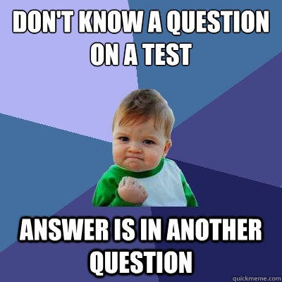

You have reached the end of questions
Hopefully you will be a little more ready for your YC interview, good luck! :)
Why not check out
GoScale
, it's cloud computing that scales in milliseconds.
Timer

ProTip:
Key Controls
space
to restart timer
return
to next question